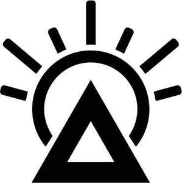

Trade Mark Journal No.2025/038 19 September 2025
UK00004230797 8 July 2025 (16,18,21,25,35)
Mark 1
Mark 2

- Class 16
- Printed matter; printed publications; books; printed books; children's books; comic books; story books; picture books; baby books; diaries; daily planners; agendas; journals; blank journals; blank journal books; blank writing journals; notebooks; pocket notebooks; printed notebooks; spiral-bound notebooks; reporters' notebooks; holders for notebooks; notebook paper; notebook dividers; notebook covers; log books; note cards; printed note books; printed pocket calendars; pocket calendars; printed calendars; tear-off printed calendars; desk top planners; printed desk top planners; stationery; printed stationery; bookmarks; bookmarkers; cards; name cards; gift cards; occasion cards; motivational cards; picture cards; business cards; advertising posters; printed advertising posters; posters; printed posters; poster books; poster magazines; mounted posters; mounted printed posters; posters made of paper; 3D wall art made of paper; 3D wall art made of card; 3D decals for use on any surface; printed leaflets; printed flyers; printed brochures; printed newsletters; printed booklets; printed pamphlets; printed curricula; printed lectures; printed questionnaires; printed programmes; printed newspapers; printed periodicals; printed diplomas; printed plans; printed visuals; printed emblems; printed emblems [decalcomanias]; printed patterns; printed patterns for dressmaking; printed patterns for costumes; printed colouring books; printed teaching materials; printed training materials; printed educational materials; printed matter for instructional purposes; printed informational folders; printed informational cards; printed consumer reports; printed recipe cards; printed promotional material; printed advertisements; adhesive printed labels; printed paper labels; printed paper signs; photographs [printed]; pictures in the nature of printed photographs; portraits in the nature of printed photographs; paintings [pictures], framed or unframed; mounted and unmounted printed photographs; printed advertising boards of paper; printed advertising boards of cardboard; printed event admission tickets; printed packaging materials of paper; printed matter, and stationery and educational supplies; printed transfers for embroidery or fabric appliqués; money holders; partially printed forms.
- Class 18
- Bags; handbags; fashion handbags; evening purses and bags; clutch bags; crossbody bags; shoulder bags; tote bags; beach bags; casual bags; Boston bags; duffel bags; sports bags; gym bags; athletics bags; barrel bags; backpacks; hiking backpacks; rucksacks; knapsacks; school backpacks; school bags; school satchels; school book bags; book bags; baby bags; diaper bags; nappy bags; baby backpacks; pouch baby carriers; baby carriers worn on the body; attaché cases and bags; briefcases; folding briefcases; portfolio cases; business cases; document cases; document holders; art portfolios; music cases; music bags; vanity cases not fitted; make-up bags and cases; toiletry bags and cases not fitted; wash bags not fitted; drawstring bags; mesh shopping bags; net shopping bags; textile shopping bags; canvas shopping bags; shopping bags with wheels; wheeled shopping bags; grocery tote bags; souvenir bags; felt pouches; pouches of leather; pouches for holding make-up, keys and other personal items; tool pouches sold empty; kit bags; holdalls; carryalls; carry-on bags; overnight bags; overnight cases; travel bags; travel cases; travel baggage; travel garment covers; travelling bags made of leather; travelling cases; luggage; luggage bags; roller suitcases; roller bags; trolley duffels; suitcases; suitcases with wheels; suitcases with built-in shelves; trunks; trunks and suitcases; cabin bags; motorized suitcases; two-wheeled shopping bags; weekend bags; waterproof bags; garment bags; garment bags for travel; garment carriers; boot bags; bags for sports clothing; bags for clothes; garment bags for travel; flexible bags for garments; inserts for luggage in the form of compression cubes; wallets; card wallets; pocket wallets; billfolds; purses; coin purses and holders; change purses; chain mesh purses; multi-purpose purses; notecases; credit card cases; credit card holders; business card holders; key cases; key pouches; key wallets; holders for keys in the nature of cases or wallets; ankle-mounted wallets; luggage tags; baggage tags; plastic luggage tags; rubber luggage tags; metal luggage tags; lockable luggage straps; luggage straps; luggage covers; luggage labels; luggage label holders; luggage organizers; bands of leather; leather shoulder straps; leather shoulder belts; spur straps; straps for luggage; straps for handbags; handbag straps; harness made from leather; draw reins; training leads for horses; leather and imitation leather; leather bags and wallets; bags made of leather; bags made of imitation leather; artificial fur bags; snakeskin; rawhides; pelts; moleskin; imitation hides; leather cloth; leather cord; tanned leather; polyurethane leather; sheets of leather for use in manufacture; sheets of imitation leather for use in manufacture; hat boxes of leather; hat boxes for travel; sew-on tags of leather for clothing; leather patches; grips for holding shopping bags; belt pouches; bum bags; waist bags; hipsacks; hip bags; sling bags; sling bags for carrying babies; messenger bags; fanny packs; charm bags; pochettes; pouchettes; gentlemen’s handbags; ladies’ handbags; slouch handbags.
- Class 21
- Mugs; glass mugs; travel mugs; insulated mugs; cups; coffee cups; tea cups; egg cups; drinking glasses; tumblers; bottles; drinking bottles; reusable water bottles; flasks; thermally insulated containers for food or beverages; jugs; pitchers; bottle openers; cup lids; coasters, not of paper or textile; household containers for beverages.
- Class 25
- Socks; ankle socks; anklets [socks]; non-slip socks; anti-perspirant socks; thermal socks; woollen socks; yoga socks; sports socks; men’s socks; women’s socks; socks and stockings; sock liners; Underwear; briefs; boxer shorts; boxer briefs; trunks; swim briefs; panties; jockstraps; camisoles; bodies [underclothing]; body stockings; thermal underwear; sweat absorbent underwear; maternity underwear; pantyhose; slips; nightwear; nightgowns; pyjamas; negligees; dressing gowns; bathrobes; hooded bathrobes; bathrobes; lounge robes; Clothing; t shirts; printed t shirts; polo shirts; shirts; dress shirts; blouses; tops; tank tops; thermal tops; tunics; chemises; camisoles; vest tops; singlets; thermal vests; sports bras; moisture wicking sports bras; brasseries; bustiers; body suits; jumpers; sweaters; pullovers; cardigans; fleece jackets; fleece pullovers; fleece tops; fleece vests; hoodies; hooded sweatshirts; sweatshirts; sweatpants; sweatshirts; sweat jackets; sweat shorts; sweat suits; tracksuits; track tops; track bottoms; joggers; jogging suits; jogging tops; jogging bottoms; sports shirts; sports jerseys; cycling tops; rash guards; gym wear; athletic uniforms; sportswear; casual wear; smart clothing; exercise wear; maternity wear; pants; trousers; leggings; sweatpants; lounge pants; jogging bottoms; capri pants; cargo pants; knickers; denim jeans; denim pants; corduroy trousers; leather trousers; shorts; bermuda shorts; boardshorts; swim trunks; bathing trunks; bathing costumes; bathing suits; swim wear for men, women and children; swim caps; fitted swimming costumes with bra cups; slips; rompers; playsuits; jumpsuits; boiler suits; dungarees; boiler suits; coveralls; overalls; leisure suits; track suits; triathlon clothing; cycling clothing; athletic clothing; gym suits; exercise clothing; sports clothing; outdoor clothing; waterproof clothing; rainwear; raincoats; parkas; trench coats; windbreaker jackets; quilted jackets; down jackets; padded jackets; leather jackets; blazers; casual jackets; bomber jackets; denim jackets; fleece jackets; safari jackets; coaches’ jackets; heavy coats; greatcoats; coats; overcoats; topcoats; rain capes; cloaks; capes; ponchos; gilets; vests; waistcoats; down vests; quilted vests; headwear; hats; caps; baseball caps; cycling caps; visors; sun visors; flat caps; beanie hats; bobble hats; berets; fedoras; fascinators; straw hats; knitted caps; headbands; headscarves; head gaiters; ear warmers; balaclavas; bandanas; caps with visors; shower caps; ushankas; fashion hats; party hats; small hats; headwear incorporating LEDs; belts [clothing]; fabric belts; leather belts; imitation leather belts; money belts; suspenders [braces]; braces for clothing; garters; garter belts; wristbands; sweatbands for head and wrist; gloves; fingerless gloves; knitted gloves; thermal gloves; sports gloves; cycling gloves; mittens; ear muffs; earmuffs; neck scarves; mufflers; shawls; stoles; capes; wraps.
- Class 35
- Retail and wholesale services in connection with the sale of printed matter, books, stationery, printed publications, printed educational materials, printed instructional materials, printed promotional materials, calendars, notebooks, greeting cards, posters, bookmarks, photographs, and wall art; Retail and wholesale services relating to bags, handbags, backpacks, tote bags, travel bags, luggage, wallets, purses, pouches, and fashion accessories; Retail and wholesale services relating to clothing, footwear and headgear; Retail and wholesale services relating to clothing accessories, fashion accessories, belts, gloves, scarves, hats, caps, headwear and outerwear; Retail and wholesale services in relation to home textiles, wall coverings, and decorative items; Retail and wholesale services relating to mugs, drinking glasses, bottles, flasks, cups, jugs, coasters and household containers for beverages; Retail and wholesale services relating to sporting goods, sporting articles, gym wear, and sports clothing; Retail and wholesale services relating to art materials and printed artwork; Retail and wholesale services in relation to recorded content, downloadable music files, downloadable electronic publications, downloadable digital image files authenticated by non-fungible tokens (NFTs); Retail services provided via online platforms, mail order, and physical retail stores in relation to the aforesaid goods; Online retail store services in relation to clothing, headgear, bags, fashion accessories, stationery, printed matter, mugs, and glassware; Mail order retail services connected with clothing accessories and fashion accessories; Retail services connected with stationery and stationery supplies; Retail services in relation to works of art; Retail services in relation to downloadable virtual clothing; Retail of third-party pre-paid cards for the purchase of clothing, clothing accessories, and multimedia content; Presentation of goods on communication media, for retail purposes; Business management of retail outlets and wholesale and retail store operations; Administration of the business affairs of retail stores.
Paulina Sienny